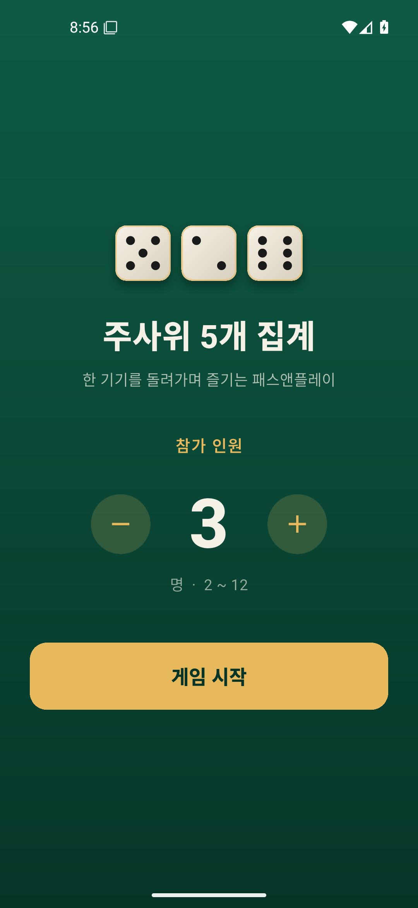
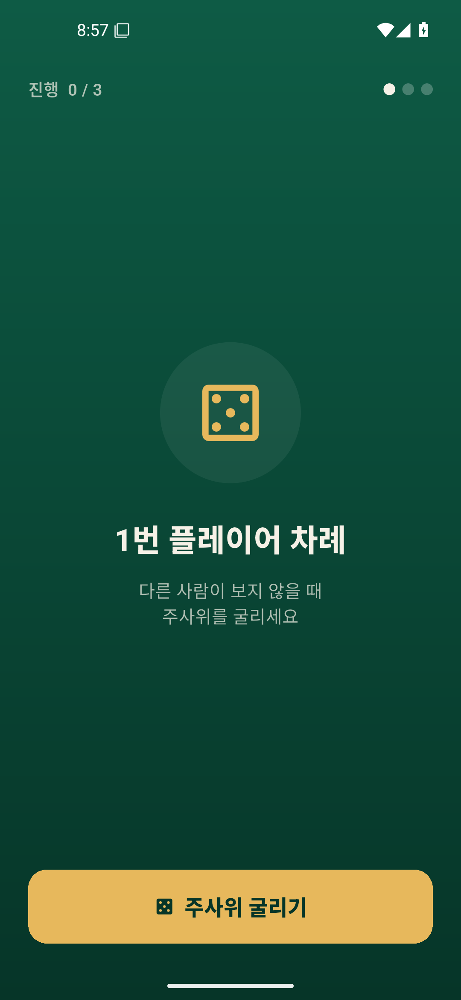
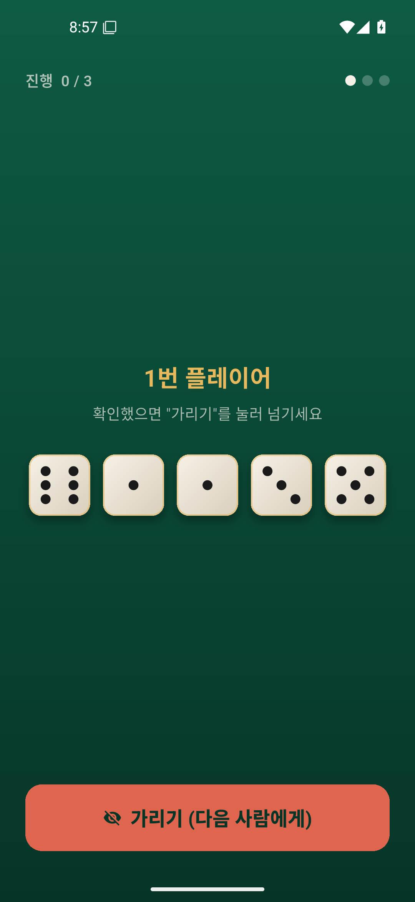
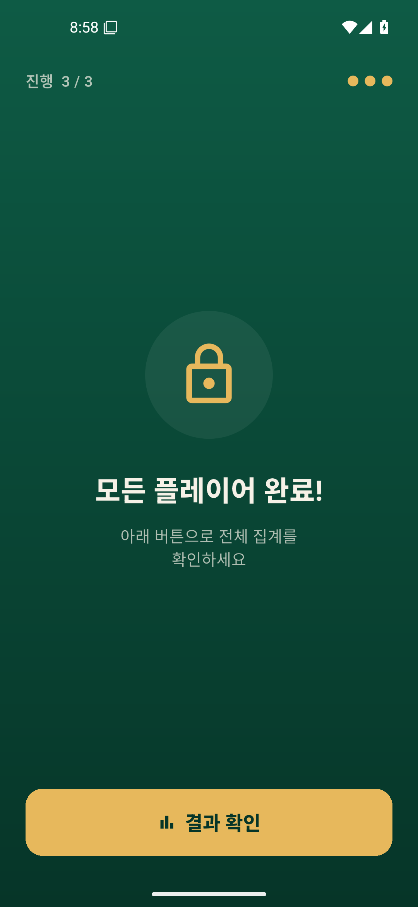
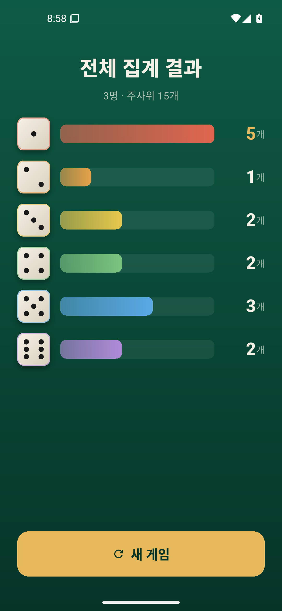

flowchart TD
classDef done fill:#e7b85c,stroke:#b8862f,color:#06281e;
classDef prog fill:#7bc47f,stroke:#4e8a52,color:#06281e;
classDef todo fill:#19463a,stroke:#5a7e70,color:#cfe3da;
subgraph A[A. 준비]
A1[메모리: dailyapp 워크플로 로드]:::done
A2[Flutter 3.44 / git / gh 확인]:::done
A3[새 폴더 five_dice 스캐폴드]:::done
end
subgraph B[B. 빌드]
B1[테마/펠트 디자인]:::done --> B2[커스텀 페인트 주사위]:::done
B2 --> B3[게임 상태/페이즈 로직]:::done
B3 --> B4[셋업/플레이/결과 화면]:::done
B3 --> B5[단위 테스트 3건]:::done
B2 --> B6[자작 주사위 아이콘]:::done
end
subgraph C[C. 검증]
C1[flutter analyze 0 issue]:::done
C2[APK 에뮬 설치]:::done --> C3[전 플로우 스크린샷 검증]:::done
end
subgraph D[D. 배포]
D1[git + GitHub repo]:::done
D2[웹 → GitHub Pages LIVE]:::done
D3[APK 산출물]:::done
end
A3 --> B1
B4 --> C1 --> C2
C3 --> D2
B5 --> C1
D1 --> D2
C2 --> D3





| 시각 | 구분 | 내용 |
|---|---|---|
| 17:50 | 📣 지시 | dice5_spec.md 기반 오프라인 패스앤플레이 앱 빌드: 새 폴더·새 repo(doonghwi)·새 Pages 도메인 / Firebase 불필요 / git doonghwi, Co-Authored-By 금지 / ntfy 결정 알림 / 에뮬 스크린샷 검증 / 웹 --pwa-strategy=none 배포 / 완성까지 멈추지 말 것 |
| 17:51 | ✅ 수행 | spec + 메모리(워크플로/ntfy/git신원/에뮬셀프테스트) 로드. 환경 확인(Flutter 3.44, gh=doonghwi, git 신원 OK). five_dice 스캐폴드(android+web) |
| 17:55 | ✅ 수행 | 펠트 테마 + 커스텀 페인트 주사위(폰트/이모지 불필요) + 게임 로직/페이즈 + 셋업·플레이·결과 화면 작성. 단위테스트 3건, analyze 0 issue. 자작 주사위 아이콘(GDI+) 생성 |
| 17:58 | ✅ 수행 | git init + GitHub repo five-dice 생성·푸시(author doonghwi). APK 빌드(42.3MB) |
| 18:02 | ✅ 수행 | 에뮬레이터 전 플로우 검증: 인원3 → 굴리기 → 5개공개 → 가리기 → 다음플레이어 프라이버시 → 전원완료 → 결과집계(합 15개 정확). 스크린샷 7장 |
| 18:03 | 📣 지시 | "한글로 말하고, 결정 필요하면 ntfy로 알림 줘" |
| 18:05 | ✅ 수행 | 이후 한글 진행. 웹 --pwa-strategy=none 빌드 → gh-pages 배포 LIVE(HTTP 200). 잘못 섞인 소스/.omc 파일 정리해 깨끗한 41파일로 재배포 |
| 18:10 | ✅ 수행 | 이 대시보드 생성. APK 산출물 복사, ntfy 완료 알림, 메모리 갱신 진행 |